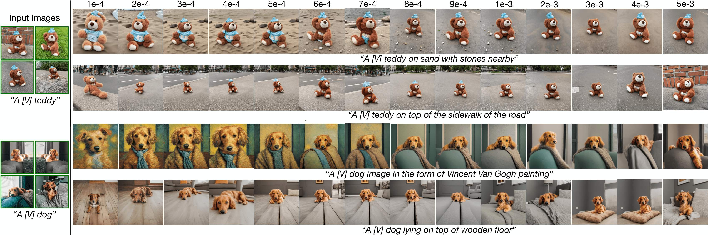

DiffuseKronA: A Parameter Efficient Fine-tuning Method for Personalized Diffusion Model
Ablation Study
Effect of Training Iterations
In T2I personalization, the timely attainment of satisfactory results within a specific number of iterations is crucial. This not only reduces the overall training time but also helps prevent overfitting to the training images, ensuring efficiency and
higher fidelity in image generation. With SDXL, we successfully generate desired-fidelity images within 500 iterations, if the input images and prompt complexity are not very high. However, in cases where the input
image complexity or the prompt complexity requires additional refinement, it is better to extend the training up to 1000 iterations as depicted below.

Effect of Size of Kronecker Factors
The size of the Kronecker factors significantly influences the images generated by DiffuseKronA. Larger Kronecker factors tend to produce images with higher resolution and more detailing, while smaller Kronecker factors result in lower-resolution images
with less detailing. Images generated with larger Kronecker factors tend to look more realistic, while those generated with smaller Kronecker factors appear more abstract. Varying the Kronecker factors can result
in a wide range of images, from highly detailed and realistic to more abstract and lower resolution. In the figure below when both a1 and a2 are set to relatively high values (8 and 64 respectively), the generated
images are of very high fidelity and detail. The features of the dog and the house in the background are more defined and realistic with the house having a blue colour as mentioned in the prompt. When a1 is halved
(4) while maintaining the same (64) results in images where the dog and the house are still quite detailed due to the high value of a2, but perhaps less so than in the previous case due to the smaller value of a1.
However, when the factors are small \(\le\) 8, not only the generated images do not adhere to the prompt, but the number of trainable parameters increases drastically.
Effect of Learning Rate
Our method produces consistent results across a wide range of learning rates. Here, we observed that the images generated for a learning rate closer to the optimal learning rate value \(6\times\mathrm{10}^{-4}\) generate similar images. However, learning
rates exceeding \(1\times\mathrm{10}^{-3}\) contribute to model overfitting, resulting in high-fidelity images but with diminished emphasis on input text prompts. Conversely, learning rates below \(1\times\mathrm{10}^{-4}\)
lead to lower fidelity in generated images, prioritizing input text prompts to a greater extent.


Few-shot Image Generation
While our model demonstrates remarkable proficiency in generating compelling results with a single input image, it encounters challenges when attempting to generate diverse poses or angles. However, when supplied with multiple images (2, 3, or 4), our
model adeptly captures additional spatial features from the input images, facilitating the generation of images with a broader range of poses and angles. Our model is able to effectively use the information from
multiple input images to generate more accurate and detailed output images as depicted in below.

Choice of Modules to Fine-tune the model
Our findings reveal that fine-tuning only the attention weight matrices, namely \(\left(W_K, W_Q, W_V, W_O\right)\), proves to be the most impactful and parameter-efficient strategy. Conversely, fine-tuning the FFN layers does not significantly enhance
image synthesis quality but substantially increases the parameter count, approximately doubling the computational load. Refer to the figure below for a visual representation comparing synthesis image quality with
and without fine-tuning FFN layers on top of attention matrices. This graph unequivocally demonstrates that incorporating MLP layers does not enhance fidelity in the results. On the contrary, it diminishes the quality
of generated images in certain instances, such as \(\textit{A [V] backpack in sunflower field}\), while concurrently escalating the number of trainable parameters substantially, approximately \(2x\) times.